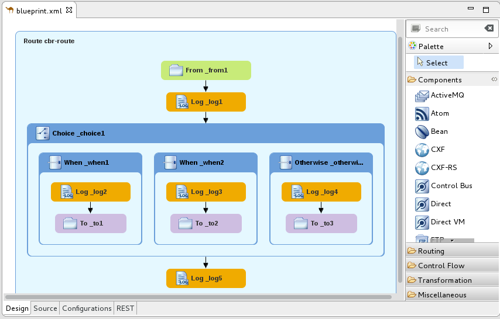
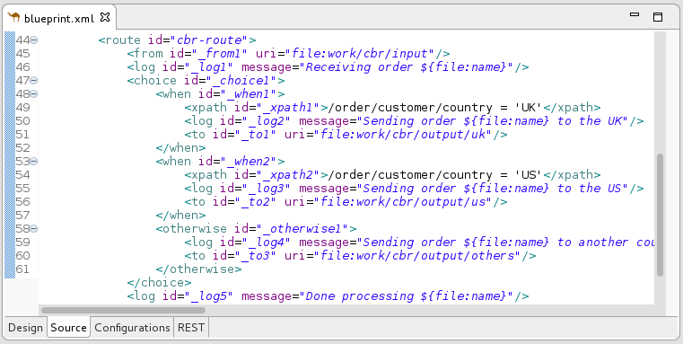

Use the Fuse Integration perspective to design, monitor, test, and publish your integration application.

You can open the Fuse Integration perspective in the following ways:
- When you create a new Fuse Integration project (see Creating a New Fuse Integration Project), the tooling switches to the Fuse Integration perspective.
- Click
 on the right side of the Developer Studio
tool bar. If the
icon is not available on the tool bar, click
on the right side of the Developer Studio
tool bar. If the
icon is not available on the tool bar, click
 and then select Fuse
Integration from the list of available
perspectives.
and then select Fuse
Integration from the list of available
perspectives. - Select Window → Perspective → Open Perspective → Fuse Integration.
The Fuse Integration perspective consists of nine main areas:
Project Explorer view
Displays all projects known to the tooling. You can view all artifacts that make up each project. The Project Explorer view also displays all routing context
.xml. files for a project under itsCamel Contextsnode. This enables you to find and open a routing context file included in a project. Under each routing context.xmlfile, the Project Explorer view displays all routes defined within the context. For multiroute contexts, this lets you focus on a specific route on the canvas.
The route editor
Provides the main design-time tooling and consists of three tabs:
Design — Displays a large grid area on which routes are constructed and a palette from which Enterprise Integration Patterns (EIPs) and Camel components are selected and then connected on the canvas to form routes.
The canvas is the route editor’s workbench and where you do most of your work. It displays a graphical representation of one or more routes, which are made up of connected EIPs and Camel components (called nodes once they are placed on the canvas).
Selecting a node on the canvas populates the Properties view with the properties that apply to the selected node, so you can edit them.
The Palette contains all of the patterns and Camel components needed to construct a route and groups them according to function — Components, Routing, Control Flow, Transformation, and Miscellaneous.
Source
Displays the contents of the .xml file for the routes constructed on the route editor’s canvas.
You can edit the routing context in the Source tab as well as in the Design tab. The Source tab is useful for editing and adding any configuration, comments, or beans to the routing context file. The content assist feature helps you when working with configuration files. In the Source tab, press Ctrl+Space to see a list of possible values that can be inserted into your project.
Configurations — Provides an easy way to add shared configuration (global endpoints, data formats, beans) to a multi-route, routing context. For details see Adding global endpoints, data formats, or beans.

Properties view
Displays the properties of the node selected on the canvas.
JMX Navigator view
Lists the JMX servers and the infrastructure they monitor. It enables you to browse JMX servers and the pocesses they are monitoring. It also identifies instances of Red Hat processes.
The JMX Navigator view drives all monitoring and testing activities in the Fuse Integration perspective. It determines which routes are displayed in the Diagram View, the Properties view, and the Messages View. It is also provides menu commands for activating route tracing, adding and deleting JMS destinations, and starting and suspending routes. It is also the target for dragging and dropping messages onto a route.
By default, the JMX Navigator view shows all Java processes that are running on your local machine. You can add JMX servers as needed to view infrastructure on other machines.
Diagram View
Displays a graphical tree representing the node selected in the JMX Navigator view. When you select a process, server, endpoint, or other node, the Diagram View shows the selected node as the root with branches down to its children and grandchildren.
When you select a broker, the Diagram View displays up to three children: connections, topics, and queues. It also shows configured connections and destinations as grandchildren.
When you select a route, the Diagram View displays all nodes in the route and shows the different paths that messages can take through the route. It also displays timing metrics for each processing step in the route when route tracing is enabled.
Messages View
Lists the messages that have passed through the selected JMS destination or through Apache Camel endpoints when route tracing is enabled.
When a JMS destination is selected in the JMX Navigator view, the view lists all messages that are at the destination.
When route tracing is enabled, the Messages View lists all messages that passed through the nodes in the route since tracing started. You can configure the Messages View to display only the data in which you are interested and in your preferred sequence.
When a message trace in the Messages View is selected, its details (message body and all message headers) appear in the Properties view. In the Diagram View, the step in the route associated with the selected message trace is highlighted.
Servers view
Displays a list of servers managed by the tooling. It displays their runtime status and provides controls for adding, starting and stopping them and for publishing projects to them.
Terminal view
Displays the command console of the connected container. You can control the container by entering commands in the Terminal view.
Console view
Displays the console output for recently executed actions.